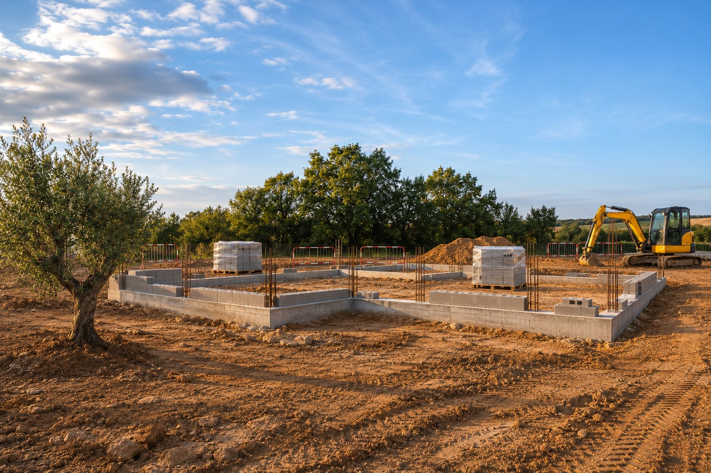
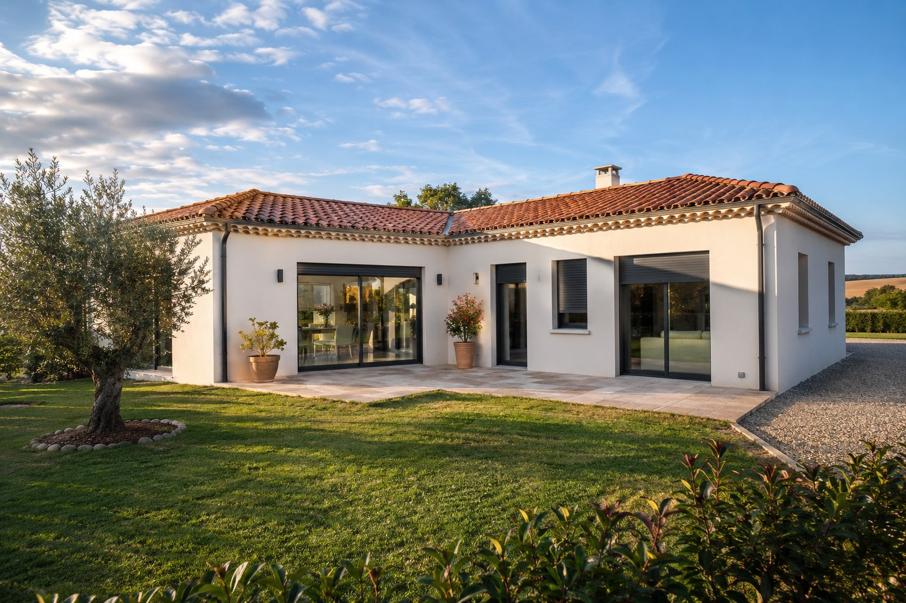

SmileConstructions
Maquette du site, en deux versions. Choisissez celle que vous voulez parcourir.

Version jaune
L'esprit de la carte de visite : fond jaune, bandes blanches, ombres franches.
Voir la version jaune
Version blanche
La maison en plein écran, des panneaux de verre blanc, tout en clair.
Voir la version blancheImages d'illustration, en attendant les photos des chantiers. Le questionnaire n'envoie encore aucune demande.